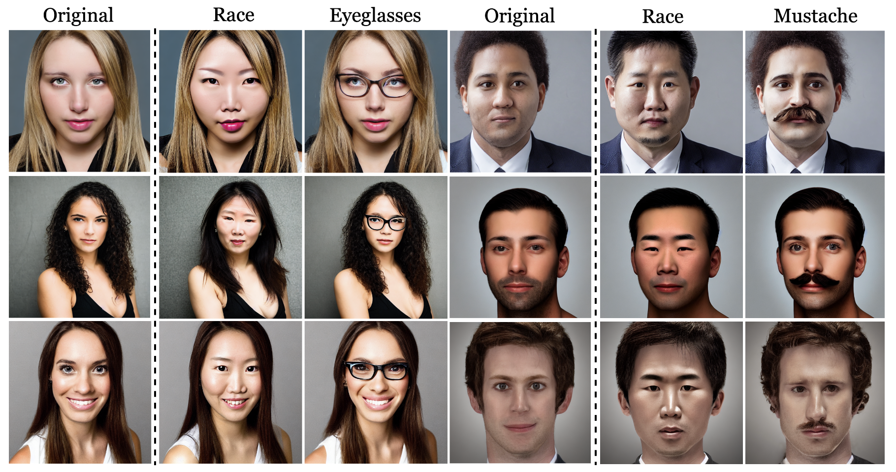

Selected Publications

MotionShop: Zero-Shot Motion Transfer in Video Diffusion Models with Mixture of Score Guidance

MotionFlow: Attention-Driven Motion Transfer in Video Diffusion Models

RAVE: Randomized Noise Shuffling for Fast and Consistent Video Editing with Diffusion Models

The Curious Case of End Token: A Zero-Shot Disentangled Image Editing using CLIP

Stylebreeder 🎨: Exploring and Democratizing Artistic Styles through Text-to-Image Models
Contact
Feel free to reach out for research collaborations or inquiries.